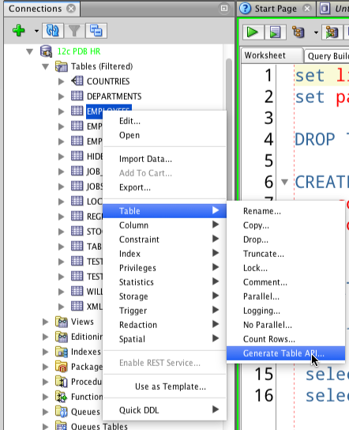

Oracle
.png)
Oracle es una empresa tecnológica líder a nivel mundial, fundada en 1977, y su producto más conocido es Oracle Database, un sistema de gestión de bases de datos relacionales (RDBMS) muy potente para el almacenamiento y análisis de grandes volúmenes de información. Además de su base de datos, Oracle ofrece una amplia gama de productos y servicios en la nube (Oracle Cloud) y soluciones de software para diversas áreas empresariales, como el ERP (Planificación de Recursos Empresariales), HCM (Gestión del Capital Humano) y CRM (Gestión de Relaciones con Clientes).
Cual es su funcion principal:
Oracle es la primera compañía de software que desarrolla e implementa software para empresas 100 por ciento activado por Internet a través de toda su línea de productos: base de datos, aplicaciones comerciales y herramientas de desarrollo de aplicaciones y soporte de decisiones.
El producto estrella (Oracle Database):
Gestión de datos: Es un sistema para almacenar, gestionar y recuperar grandes volúmenes de datos estructurados de manera eficiente.
Modelo relacional: Organiza la información en tablas con filas y columnas, lo que facilita su visualización y manipulación.
SQL: Utiliza el lenguaje SQL (Structured Query Language) para interactuar con la base de datos, permitiendo crear, consultar y modificar datos.
Características clave: Ofrece alta disponibilidad, escalabilidad, seguridad avanzada, y soporte para análisis avanzados y big data
Ejemplo de CRUD operacion
